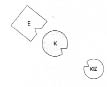
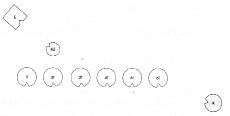
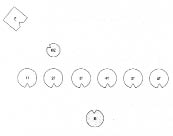
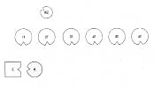
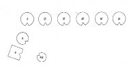

LAURA Çılgınlar gibi öfkeliyim ve neden, bilmiyorum.
HELLINGER Öfkeli mi? Şöyle gerçekten çileden mi çıkmış?
LAURA Evet, öyle. Gülüyor musun?
HELLINGER Ne yapayım? Ağlayayım mı? -Pekâlâ, aileni bir dizelim bakalım.
1. Resim

E Erkek
K Kadın (=Laura)
Kız Kız çocuk
HELLINGER Bu dizim sistemik bir kilitlenme gösteriyor. Çünkü en uç fantezilerde bile erkekle kadın arasında böyle bir ilişki hayal edilemez.
Laura’ya Aklına bir şey geliyor mu?
LAURA Çoğu zaman sanki birisi bir şey saklıyormuş gibi bir duyguya kapıldım. Bir sırrın peşindeyim fakat sorduğum her soru büyük bir hoşnutsuzlukla karşılanıyor. Ama annemin bir şeyler sakladığına dair lanet bir kuşku var içimde.
HELLINGER O halde kilitlenme onun ailesinden geliyor.
LAURA Annemin babasının yedi çocuğu var, bir alay kız. Ona bu kadarı yetmemiş. Bir oğul istiyormuş. Bütün kızlarının evlenmeden çocuk yapmalarına büyük önem vermiş. Aralarından birinin, kendi adını devam ettirecek bir oğul dünyaya getireceğini umuyormuş. Bütün kızları da onun düşündüğü gibi hareket etmiş, annem hariç. Annem evlenmiş ve sadece onun oğulları olmuş. Diğer hepsinin kızları var.
HELLINGER Bu durumda dizimde kocan kimi temsil etmek zorunda? -Büyükbabayı. Eğer bu doğruysa kocana hayli borçlusun.
Gruba “Çifte aktarım dinamiği” konusunda bir kez daha bir şey söylemek istiyorum. Burada kendime ilk sorduğum, kızların büyükbabaya karşı duygularının ne olmuş olduğu? -Öfkeliydiler, haklı olarak öfkeli. Peki bu öfke duygularından kim nasibini aldı?
LAURA Ayrıldığım kocam.
HELLINGER Doğru. Bu kızların duygularını üstleniyorsun. Bu, teyzelerinden sana öznenin aktarımı. Ancak öfke büyükbabanı bulacağına ayrıldığın kocanı buluyor. Bu da büyükbabadan kocana nesnenin aktarımı. Dolayısıyla kocana çok şey borçlusun. Kişi kendini haklı, gerçekten haklı hissettiğinde, senin az önce olduğun gibi, çoğu zaman bunun altında bir çifte aktarım vardır. Kendi hakkın söz konusu olduğunda, başka birisinin hakkına kıyasla öylesine baş koymazsın yoluna.
HELLINGER Şimdi seninle bir alıştırma yapacağım. Bütün teyzelerini ve kendini diz.
2. Resim

1T 1. teyze vb
HELLINGER Laura’ya Şimdi her bir teyzene dostça bak ve küçük bir kız sevdiği teyzesiyle nasıl konuşursa o şekilde “Sevgili teyze” de.
LAURA Buna pek hazır değilim.
HELLINGER Olana dek tekrarla o zaman.
Laura daha iyi bir şekilde söyleyene kadar tekrarlar.
HELLINGER Şimdi teyzelerinin önünde diz çök, yerlere kadar eğil. Yukarı doğru açtığın ellerinle kollarını öne uzat ve “Sizi onurlandırıyorum” de.
3. Resim

LAURA Sizi onurlandırıyorum
HELLINGER “Sevgili teyzelerim, sizi onurlandırıyorum.”
LAURA Sevgili teyzelerim, sizi onurlandırıyorum.
HELLINGER Bir süre sonra Şimdi ayağa kalk, teyzelerinin yanına geç ve her birine “Sevgili teyze” de.
LAURA Sevgili teyze, sevgili teyze…
Laura çok heyecanlıdır. Sevgisi, acısı, acıması ancak şimdi serbestçe akmaktadır. Hellinger erkeği de yeniden onun görüş alanına iter.
4. Resim

Laura kocasına gider, boynuna sarılır ve hıçkırıklar içinde “Bağışla beni lütfen!” der.
HELLINGER Yalnızca “Üzgünüm” de. Daha fazlası değil. “Üzgünüm.”
LAURA Üzgünüm.
HELLINGER “Bilmiyordum” de.
LAURA Bilmiyordum.
HELLINGER Yatışan Laura’ya Şimdi kocanın yanına geç, kızınızı da buraya al.
5. Resim

HELLINGER Şimdi nasılsınız?
Hepsi iyidir.
HELLINGER Tamam, bu kadar.
Gruba Süreci daha yakından açıklamak istiyorum. Bir çifte aktarımda kişinin kendisi olmaktan çıktığı gözlemlenir. Başka birisiyle özdeşleşmiştir. Özdeşleşme, kişinin kendisine yabancılaşarak o insan gibi olması anlamına gelir. Özdeşleştiği insan, kişinin muhatabı değildir artık; onun gibi hisseder. Bu nedenle öncelikle teyzeleri muhatap olarak oyuna katmak gerekiyordu. Onlarla özdeşleşme, özellikle de Laura onlara “Sizi onurlandırıyorum” dediğinde artık sürdürülemez oldu. Teyzeler yeniden teyzeleri oldu, kendisi ise yalnızca kendisi, başkaca kimse değil. Teyzeler yeniden yetişkin hale geldi; kendi onurlarından, değerlerinden, haklarından kendileri sorumluydular. Laura ise yeniden küçük bir çocuk oldu ve teyzelerini çocukken sevdiği gibi sevebildi.
TEYZELERDEN BİRİNİN TEMSİLCİSİ Teyze olarak benim için onurlandırmanın ne kadar iyi geldiğini hissetmek önemliydi.
HELLINGER Teyzelerinin taşıdıkları değerle orada durmalarının ne kadar güzel olduğunu gördük. Bu olmaksızın yürümezdi. Sevgiden önce gelen onurlandırma, değer verme olmaksızın olamazdı. Bir çocuk da ebeveynine geri gittiğinde çoğu zaman, örneğin onlara karşı bir haksızlık yaptığı ya da onları küçümsediğinde önce onları onurlandırmak zorundadır. Ancak bu olursa bir karşılaşma olabilir. Aksi takdirde bir şey atlanmış olur ve karşılaşma güçten yoksun kalır.
Eşler arasında yaşanan ciddi zorlukların çoğu çifte aktarıma dayanır. Özdeşleşme görülüp çözülmedikçe buna yaklaşmak için gösterilen bütün çabalar sonuçsuz kalır. Ancak bundan sonra yeni ve iyi bir ilişki olacaktır. Özdeşleşmede kişi yabancı bir alemde yaşar, karşınızdaki o değildir. Kendisi değil, başka birisidir. Ve karşısında eşini değil, eşinin varlığında başka bir insanı görür. Her şey çarpılmıştır.
LAURA Ağzım açık kaldı! Hayatımda ilk kez birisi elini koymaksızın sırtımın ısındığını hissediyorum. Böyle bir şeyi hiç yaşamamıştım.
KOCANIN TEMSİLCİSİ Bana, “Üzgünüm, bilmiyorum” demesi dokundu.